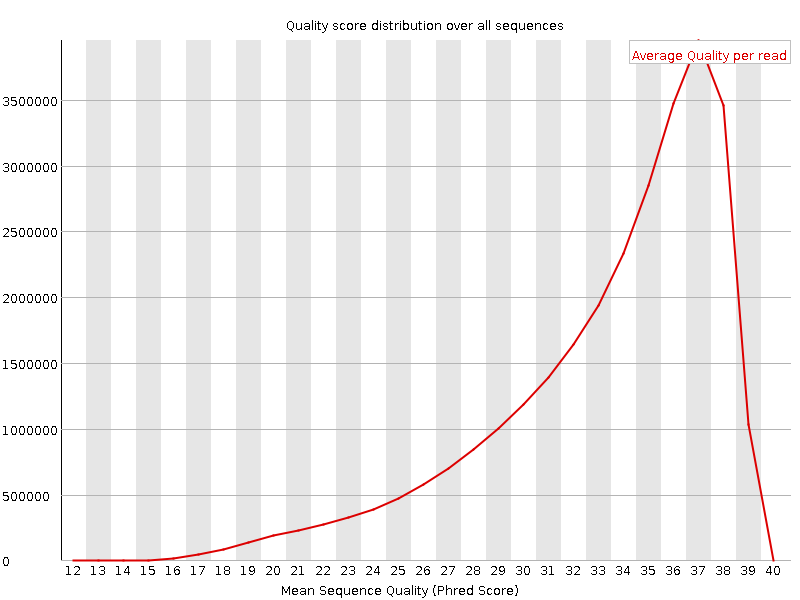
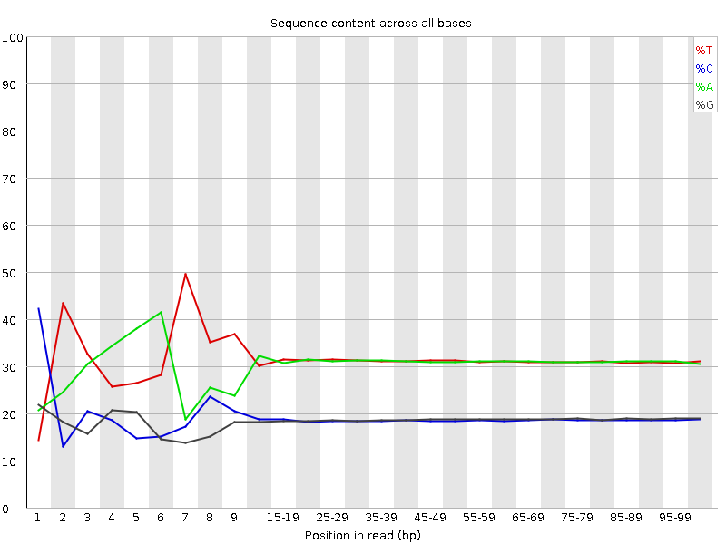
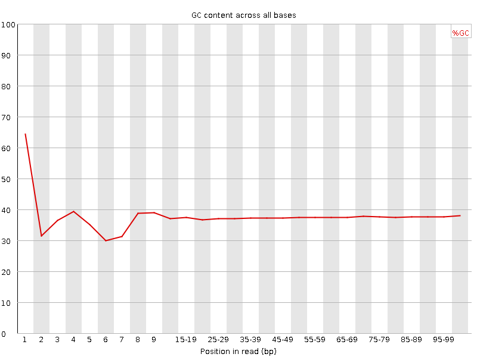
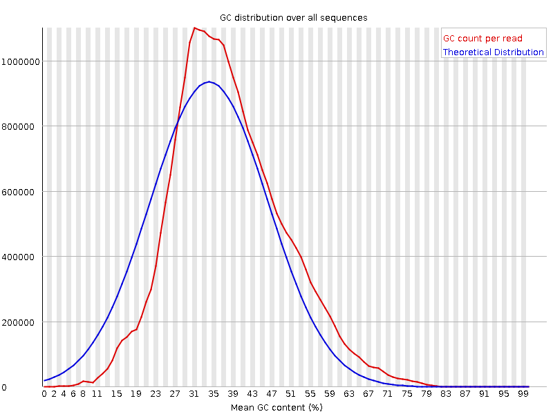
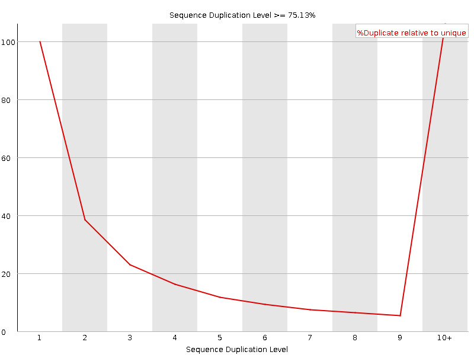

![[OK]](Icons/tick.png) Basic Statistics
Basic Statistics
| Measure | Value |
|---|---|
| Filename | c6_1.fq |
| File type | Conventional base calls |
| Encoding | Sanger / Illumina 1.9 |
| Total Sequences | 28622027 |
| Filtered Sequences | 0 |
| Sequence length | 100 |
| %GC | 37 |
Per base sequence quality

Per sequence quality scores

![[FAIL]](Icons/error.png) Per base sequence content
Per base sequence content

Per base GC content

![[WARN]](Icons/warning.png) Per sequence GC content
Per sequence GC content

Per base N content

Sequence Length Distribution

Sequence Duplication Levels

Overrepresented sequences
| Sequence | Count | Percentage | Possible Source |
|---|---|---|---|
| CTAATTTTCATCTTAATTCAACATCGAGGTCGCAAACATCTTTATCTATA | 55916 | 0.1953600281349745 | No Hit |
| CTTTCGTACAATTAATTAATATTTTATTATAGATAGAAACCAATCTGACT | 48970 | 0.1710920054683758 | No Hit |
Kmer Content

| Sequence | Count | Obs/Exp Overall | Obs/Exp Max | Max Obs/Exp Position |
|---|---|---|---|---|
| CGAGG | 2391840 | 2.2574215 | 5.8278337 | 1 |
| AAAAA | 17816950 | 2.248205 | 5.5120454 | 2 |
| CGCCG | 1423210 | 2.1855252 | 5.1459513 | 1 |
| CGACG | 2212575 | 2.068914 | 7.6363063 | 1 |
| CGGCG | 1323230 | 2.0509653 | 5.2907486 | 1 |
| CGCGG | 1208300 | 1.8728274 | 5.4559684 | 1 |
| TCGAG | 3194525 | 1.8029897 | 5.19901 | 7 |
| CTCGA | 3149960 | 1.7613914 | 8.896587 | 1 |
| CGCGA | 1795480 | 1.6789007 | 5.9189463 | 1 |
| CTGGA | 2880835 | 1.625943 | 7.0961885 | 1 |
| CGATC | 2874150 | 1.6071644 | 5.092308 | 4 |
| CCGGC | 1021425 | 1.5685319 | 5.2314844 | 1 |
| ATCGA | 4604615 | 1.5678401 | 5.4279966 | 6 |
| CGAGA | 2747780 | 1.5645303 | 5.3202314 | 1 |
| CGCCA | 1679070 | 1.5555254 | 5.0114536 | 1 |
| CTCCA | 2760280 | 1.5292127 | 5.878854 | 1 |
| GTCGA | 2649765 | 1.495527 | 5.1606917 | 1 |
| CTTTC | 4410405 | 1.4619102 | 6.505415 | 1 |
| CTTTT | 7301905 | 1.4609015 | 5.870699 | 1 |
| CGAAG | 2539640 | 1.4460195 | 5.2021255 | 1 |
| CTTCG | 2595570 | 1.4386944 | 5.5733824 | 1 |
| CTCGG | 1542140 | 1.429398 | 7.802283 | 1 |
| CTCGC | 1550940 | 1.4242564 | 6.2141585 | 1 |
| CTCGT | 2563995 | 1.4211925 | 7.071523 | 1 |
| CTGGC | 1516765 | 1.4058781 | 5.2107196 | 1 |
| CGAAA | 3668570 | 1.2601444 | 5.3991017 | 1 |
| CTTGG | 2208175 | 1.2353938 | 5.834685 | 1 |
| GAATC | 3496850 | 1.1906537 | 5.066753 | 4 |
| CTTTG | 3542005 | 1.1850249 | 5.3504024 | 1 |
| CTTGA | 3348835 | 1.1302828 | 5.1324778 | 1 |